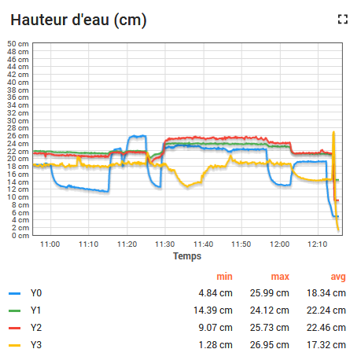

Supervisory Control And Data Acquisition (SCADA) at the hydraulic hall of Montpellier SupAgro
Montpellier SupAgro is a National Institute of Further Education in Agricultural Science (https://www.supagro.fr/web/en/). It has a hydraulic hall combining several equipments such as canals (https://www.supagro.fr/wordpress/supagro-halle-hydraulique/).
These equipments are supplied with sensors measuring water levels, flow rates, etc. and some actuators such as motorised gate.
Architecture of the SCADA

At the hydraulic hall, the central node of the SCADA architecture is a Raspberry PI 3 Model B installed with a Raspbian OS (See documentation of installation). The latter is connected to an Arduino Leonardo which is in charge to collect measurements from water lever sensors on the Canal Riquet.
Devices collecting sensor data can be connected to the SCADA by a WIFI connection (RPI-AP Wifi network emitted by the Raspberry PI).
A user can interact with the SCADA server via the SupAgro local network (ethernet or WiFi) for getting real time data or registered new data to record.
All recorded data are sent to a ThingsBoard IoT platform hosted at the UMR G-EAU and anybody can display realtime data via this platform.
Detail of SCADA service scripts
The SCADA provides several services which are running scripts programming in python:
scada_logger.pyrecords data from the Arduino Leonardoscada_net_datalogger.pyrecords data from devices connected to the RPI-AP Wifi network emitted by the Raspberry PIscada_server.pyused for communicate with the SCADA via the SupAgro local network (See the documentation for connection details and for the protocol of communication)scada_gateway.pysends all the data recorded to the ThingsBoard IoT platform.
The thingsboard IoT platform
A dashboard of the recorded data with visible at this URL : http://scada.g-eau.net/dashboard/4db16100-f3e9-11e8-9dbf-cbc1e37c11e3?publicId=299cedc0-f3e9-11e8-9dbf-cbc1e37c11e3
Data are displayed in real time on charts as on the Figure below:

It's possible to change the time window and to explore historical data. For extracting data from the thingboard IoT platform, use the R script developped here: https://github.com/DDorch/R_thingsboard_export